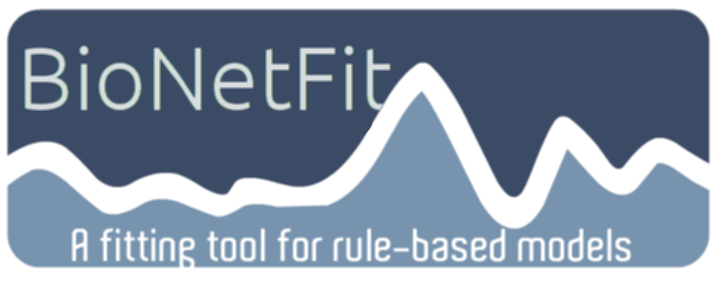
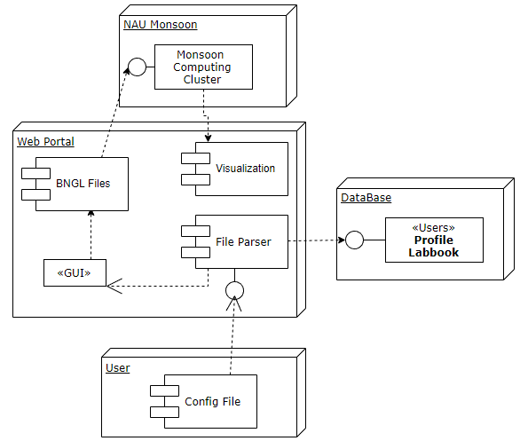

BioNetFit
Before computers were strong enough to accurately simulate reactions, researchers spent significant amounts of time and money performing thousands of experiments. Now, simulation software such as BioNetGen and NFSim exist, but are still cumbersome to use when the same experiment needs to be repeated multiple times with slightly different specifications.
BioNetFit is a tool that allows researchers to run a simulation of a molecular reaction multiple times with varying parameters. By specifying the desired ranges of values for each parameter, multiple simulations are automatically set up and run.

BioNetFit uses BNGL (BioNetGenLanguage) to model reactions, and can use either BioNetGen or NFSim to run the simulations. It also uses RuleBender to provide visualizations of the beginning and end states of the reaction.
Our Project
BioNetFit saves researchers time and money. However, it's currently only available as a command-line program. While some researchers may be more than capable of effectively using the command-line, our client worries that there are many researchers that are not technically savvy enough to use BioNetFit to its fullest potential, and, while they could take the time to learn how to use it, that would ultimately defeat the purpose of saving researchers time.
The goal of U.I. Fit is to create a web-based GUI that provides researchers with a means to quickly and easily run BioNetFit without dealing with the command-line interface.

Users will be able to upload a .bngl file, which will be parsed by the website. A GUI will then be dynamically generated, where the user can enter all information pertaining to the parameters of the simulation. Once entered, the website will generate all files and data necessary to run BioNetFit, and either return the information to the user, or outsource the simulation to a computer cluster. All information that was uploaded, entered, and generated will be saved to a database, where users can repeat and refer back to previous runs of BioNetFit.